Training Modelpack
This page will provide a walk-through for training Vision models using Modelpack in EdgeFirst Studio.
Verify Dataset
Before running a training session, ensure the dataset is ready to be used for training.
This means that the dataset is properly annotated and the dataset is properly split
with training and validation samples. The sample dataset shown below has a dedicated
split for training (1656 samples) and validation (184 samples).

To verify the annotations, click the button that navigates to the gallery. This will show the contents of the dataset. The dataset may be comprised of multiple sequences as shown below.

Clicking on any of these sequences will open individual images in the sequence with the visualizations of the annotations.
Info
Datasets that train Vision models provide image annotations of the object's 2D bounding box and segmentation mask. For more information on the dataset annotations, please see EdgeFirst Dataset Format.
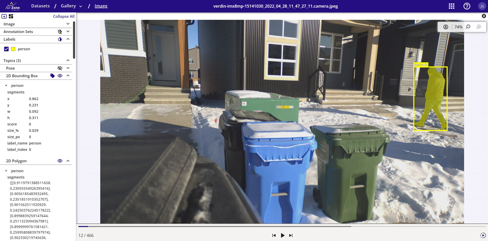
For cases where the annotations need corrections, please see Dataset Tutorials for more details.
Select the Trainer Tool
Once the training dataset is ready, select Trainer from the tool options.
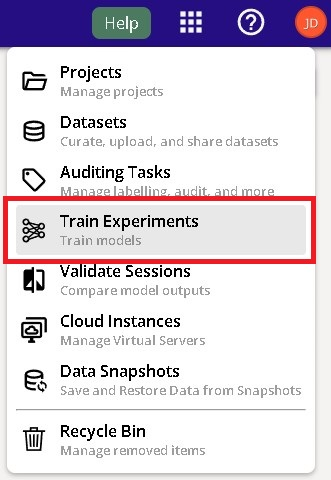
Specify the Project
Specify the project to run training at the center of the top menu bar.
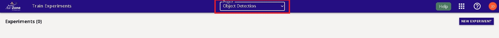
Create Training Experiment
If you haven't already done so, create a training experiment.
Create a new training experiment by clicking the create button on the top right.
This will provide pop-up for the user to specify the name and description of the experiment. Give a name and a description that reflects your goals in this experiment.
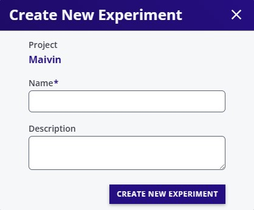
Create Training Session
Create a new training session within this experiment by clicking the NEW SESSION button as shown below.
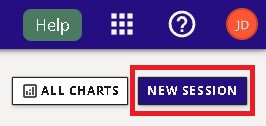
Configure the settings on the left panel by specifying Trainer Type to Modelpack
and provide additional configurations for the name of the session and the dataset to deploy.
Next configure the settings on the right panel by specifying training parameters.
By default a segmentation model will be trained, however, object detection or
multi-task based models are possible variations.
Note
Additional information on these parameters are provided by hovering over the info button. For more information on available vision augmentation please see Vision Augmentations.
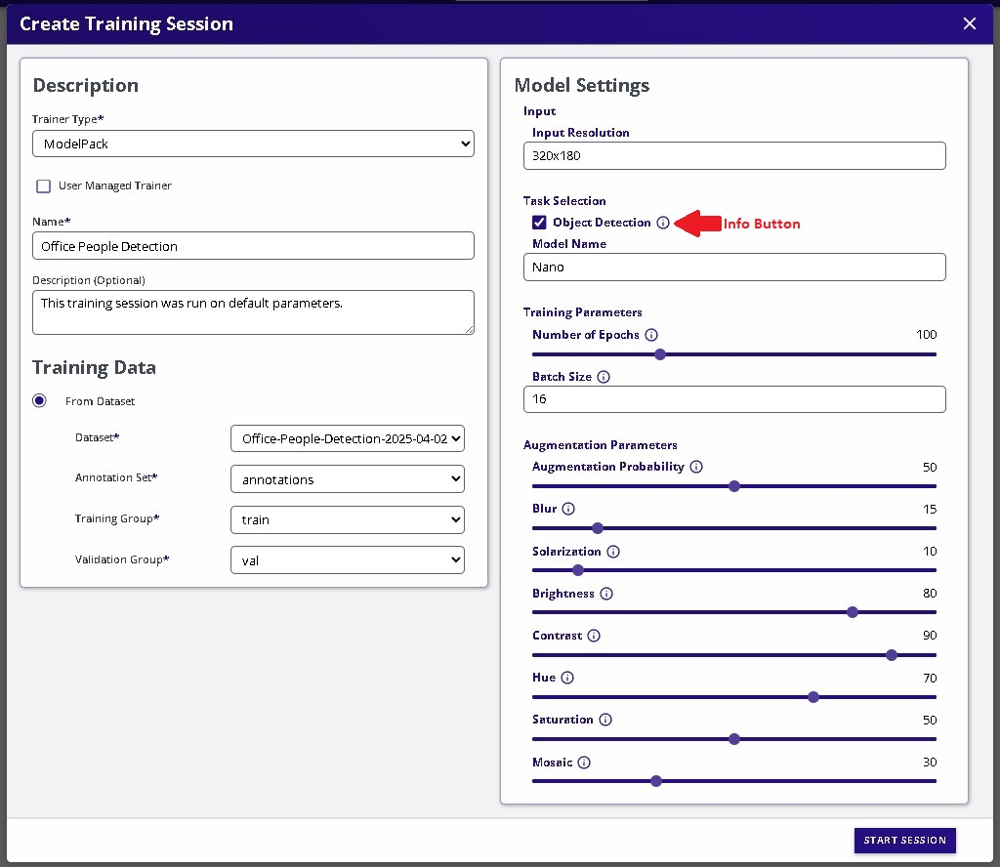
Start the Session
Start the session by clicking the START SESSION button on the bottom right.
Session Progress
The training session has now started while the progress is tracked on the left panel and additional information and status is shown on the right panel.
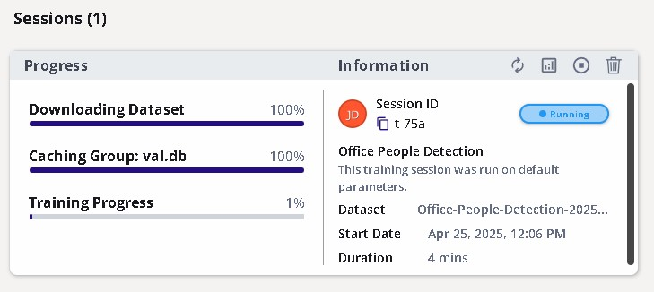
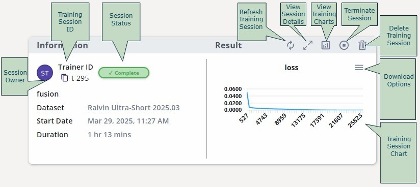
Training Metrics
The training metrics are shown by clicking the button that views the training charts on the top left of the session card.
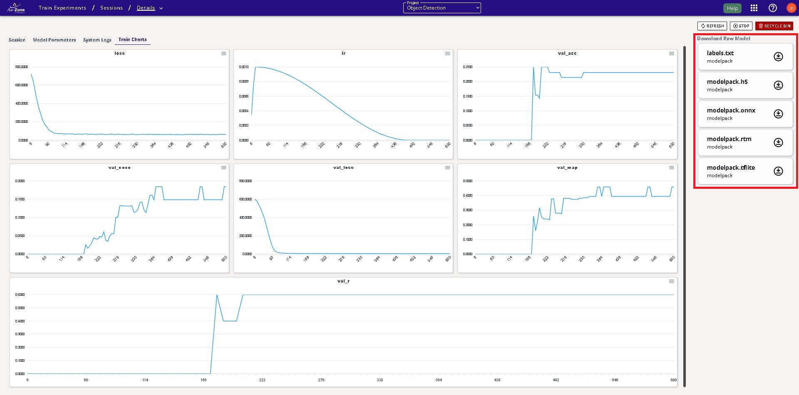
Completed Session
Once completed, the status will be shown as complete.
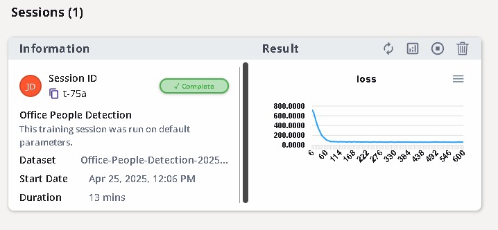
Trained Models
The trained Keras, TFLite, and RTM models can be found and downloaded by clicking on the
button that views the session details on the top right of the session card.
This will open a new dialog with the session details and the models are placed
on the top right which can then be downloaded.
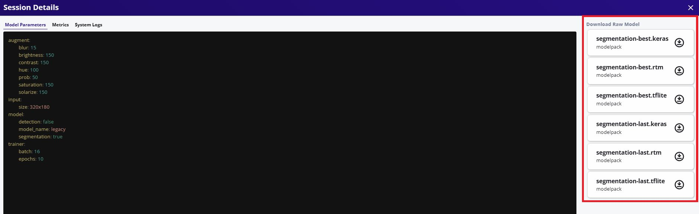
Next Steps
Now you have generated your Vision model, follow these next steps for validating your Vision model.